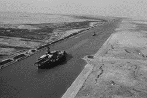

The Suez Canal Crisis: Nationalization Sparked Conflicts and Intimidated Global Safety

Spanning 193.3 kilometers, the Suez Canal, connecting the Mediterranean Sea and the Red Sea, has been serving as the significant trading route between Europe and Asia. However, the Egyptian government is now planning to nationalize the Canal, in hopes of raising its regional importance and aiming to subsequently reduce the possibility of military conflicts between Egypt and Israel.
In the early stages, as most countries were still influenced by the brutal oppression of Jews during World War II, they chose to support Jewish nationalism, assisting in the establishment of a Jewish state. When allocating the land in former Palestine, the land assigned to Jews was disproportionally more than that allocated to the Muslims. While this was seen as a positive step for compensating Jews, it sowed the seeds of discord with the Arab world. The war that erupted in 1947 serves as the best evidence. However, the end of this war did not signify the resolution of conflicts between Jews and Muslims. Today, Israel, in response to threats from Egypt, engages in warfare again, seen as a continuation of the previous conflict.
In 1954, a vessel was detained when navigating through the Suez Canal, further worsening the tension between Egypt and Israel. Even worse, Egypt blacklisted the oil tankers and prevented them from voyaging through the Canal, and blocked the Tiran Strait, which posed severe threats to the oil supply in Israel. These acts of hostility are the triggers of the unwarned invasion on October 29.
After the war broke out, the United Kingdom and France swiftly intervened in the war. In fact, the superpowers were deprived of benefits due to the policies about canal nationalization. These two countries had almost all shares of the Universal Company of the Maritime Canal of Suez. The arguments resulting from the canal’s national interests and provisions forcing countries to withdraw caused much discontentment and disputes.
Owing to Egypt's refusal, the UK and France then launched an attack after they issued statements about the ceasefire, drawing global attention. Nevertheless, the Egyptian government considered their policies doing no harm to international commodities.
As the interests of the UK and France were still hindered, the tension soon arose. Meanwhile, Israel had already declared a ceasefire in accordance with the original statements of the UK and France, making it difficult to ensure that there was no coordination between Israel and the UK-France positions.
The war has never ended since; the Arab world and Jewish forces are in constant conflict, and Egypt’s move to nationalize the Canal has sparked both economic problems and political disputes. With the intention to address the issue, the United Nations Emergency Special Session is here to encourage the uniting for peace and viable solutions.